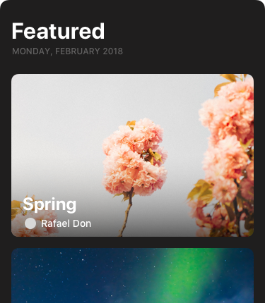

Front is a shared inbox for teams build around transparency and productivity. It allows teammates to collaborate efficiently and integrates seamlessly with the tools they already use.
iOS, Android, Web
Nucleon is a extention for the text editor Atom. It adds custom icons to the user interface in order to distinguish more easily the different files of a project. Each icon has been optimized for dark and light themes.
Atom
Collection of prototypes built on my free time in order to get more familiar with Framer.
View and explore popular photos on Unsplash. Collections and photos are dynamically loaded via Unsplash's API. This prototype focuses on an experimental navigation system for iOS.
Comming soon 